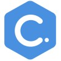

Software Developer · TS · React · Next.js · Python · K8s · Terraform · Ansible · AWS
Senior full-stack software developer with +15 years of experience in many diverse verticals, including ecommerce, healthcare, real estate, and fundraising platforms.
Python · Terraform · OpenTelemetry · Kubernetes · Prometheus · Ansible · htmx · React.js · Microservices · Rust · TypeScript · Tailwind CSS · Next.js · Generative AI
AWS · Python · Web Crawling · FastAPI · Prefect · Puppeteer · DBT · React.js · Microservices · Pandas · TypeScript · Tailwind CSS · Next.js
AWS · Azure · Jenkins · K8s · DevOps · API
AWS · APIs · Terraform · Grafana · Data Pipelines · InfluxDB · Jenkins · Ruby on Rails · Apache Airflow · React.js · Go · Algolia · Databricks · PostgreSQL · Elasticsearch · Scikit-Learn
Ruby on Rails · Ruby · Jenkins · Terraform · AWS · Kubernetes · Python · React.js · Microservices · Docker · Stripe · Elasticsearch · Scrum
Agile · Redis · Ruby on Rails · Heroku · Backbone.js · RSpec · TDD

Solo developer maintaining a construction management software. HTML · Ruby on Rails · CSS · JavaScript · Stripe
PayPal · AWS · Redis · GitHub · Ruby on Rails · Backbone.js · Solr · Braintree · MySQL
Grape · Ruby on Rails · SASS
Backend developer in a daily deal aggregator gathering offers from several deal sites across 10 countries. Ruby on Rails · Capistrano · Ruby · MongoDB · APIs
Git · Ruby on Rails · Ruby · Splunk · Ffmpeg · Transcoding · Scrum
Maintained an e-commerce app built in Rails 2.0. HTML · CSS · Ruby on Rails · Ruby · SQL · JavaScript
Frontend
Backend
Cloud & Infrastructure
Data & Other
77 total skills on LinkedIn
"I worked with Maxi at IPSY on multiple backend Ruby on Rails projects, and he quickly became our in-house expert on search and product indexing. His technical depth and ability to untangle complex problems made a real impact on the team.
Beyond the specific work, Maxi is a brilliant engineer who consistently does the right thing, learns fast, and jumps into new challenges without hesitation. He's responsible, hardworking, and genuinely pleasant to work with. Any team would be fortunate to have him."